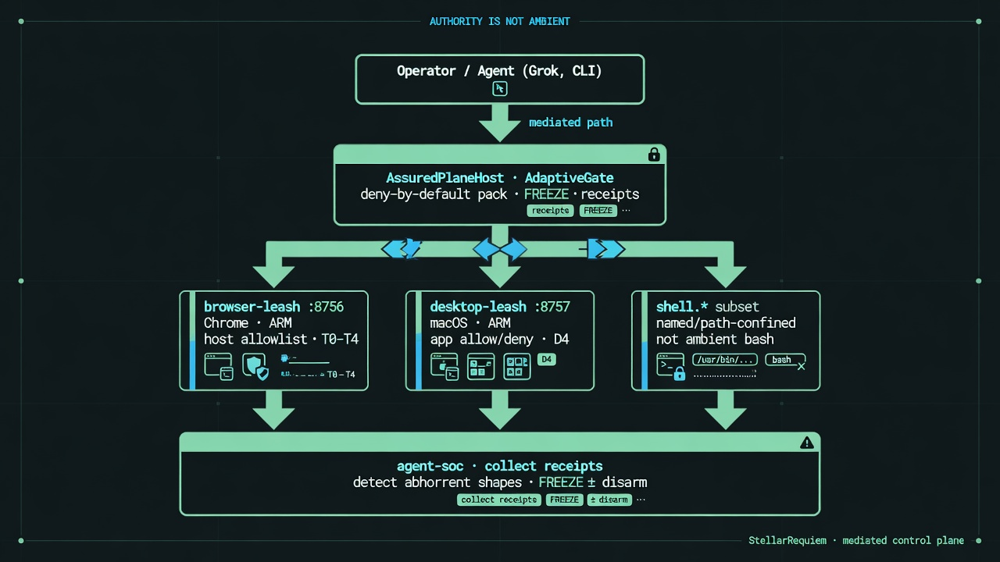

WORKING PAPER / 2026-08-03
Authority Is Not Ambient

Figure 1. Mediated control plane (illustrative).
Abstract
Agent systems that call tools—especially Model Context Protocol (MCP) servers and computer-use interfaces—create a new trust boundary: the model proposes actions that execute with operator privileges. We describe a mediated control plane that treats tool calls as gated requests rather than ambient authority. The design separates a deny-by-default runtime assurance layer for MCP-style calls (mcp-assure), local loopback leashes for Chrome and macOS desktop input under arm/allowlist/human high-blast gates (browser-leash, desktop-leash), a single assured host that routes plane tools through AdaptiveGate (agent-control), and an agent-plane collector/detector/responder for receipt-shaped abuse (agent-soc), including abhorrent tool-shape lockdown via FREEZE.
We emphasize what the system does not claim: it is not an enterprise SOC, not unlimited computer use, not a guarantee against all agent attacks, and not automatic gating of a host runtime’s native shell unless that runtime is configured to route through the host. Evaluation is framed as re-runnable hold-tests, purple fixtures, and smoke suites rather than unmeasured detection rates.
Open artifacts
Reproduce
pip install mcp-assure && mcp-assure checkpython3 ~/agent-control/cli.py smoke(local clone)python3 ~/agent-soc/purple.pypython3 ~/agent-control/cli.py session
Thesis
Authority is not ambient. Capability can rise under leashes; authority stays deny-by-default, session-armed, and human-gated on high blast.
Status
Working paper v1.0–1.1. Not peer-reviewed. Evaluation is re-runnable smoke/purple/proof boards and a fixed synthetic hit table (25/25) — not a published detection-rate study. Full text in the PDF/Markdown above. Stronger-proof backlog: STRONG_PROOF_BACKLOG.md.